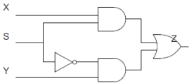

1-bit MUX#
A multiplexer (MUX) is an electronic switch that conencts one of several inputs to the output based on a selection signal S. The truth table for a 1-bit MUX is shown in Table 1.
Table 1: Truth table of a 1-bit MUX.
| X | Y | S | Z |
|---|---|---|---|
| 0 | xx | 1 | 0 |
| 1 | xx | 1 | 1 |
| xx | 0 | 0 | 0 |
| xx | 1 | 0 | 1 |
As shown in Table 1, when the selector signal is 1, the output signal mirrors input signal X. Conversely, when the selector signal is 0 the output signal mirrors the input signal Y.
The Karnaugh map for the truth table is shown in Table 2.
Note:
Karnaugh maps are a graphical method to perform minimisation of a logic function. They can easily be derived by hand for functions of up to 4-variables. To create a Karnaugh map, the input variable values are written next to the table in Grey code and the function value is written inside the cells
Table 2: Karnaugh map for Table 1 truth table.
| S\XY | 00 | 10 | 11 | 01 |
|---|---|---|---|---|
| 0 | 0 | 0 | 1 | 1 |
| 1 | 0 | 1 | 1 | 0 |
We can find the minimised combination logic function from the Karnaugh map by identifying groupings of adjacent 1s that, if we try to double its size some 0s will be included. Note that adjacency can wrap around corners (top and bottom, right and left - not diagonal!). The groupings are called prime implicants, and represent a product term of two (or more) of the input variables. A minimal form of the logic function is given by the sum of the least number of prime implicants such that all the 1-valued cells are considered.
In Table 2, there are two prime implicants. The first prime implicant corresponds to the variable $Y\cdot S'$. This is because, for this prime implicant, the value of X is 1 for both of the circled cells and S is 0 (i.e. they are both unchanging). Similarly, the second prime implicant corresponds to $X\cdot S$.
Thus, the minimum Boolean logic expression is:
$Z=(X\cdot S)+(Y\cdot S')$
The corresponding schematic is shown in Figure 1.

Figure 1: Schematic description of 1-bit MUX.In the MUX subfolder, this schematic is implemented in Vivado for a Basys 3 FPGA board, part number: xc7a35tcpg236-1.